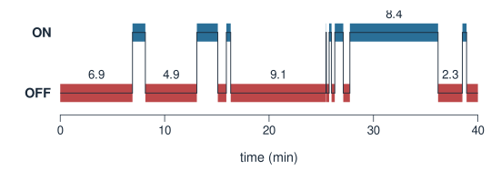
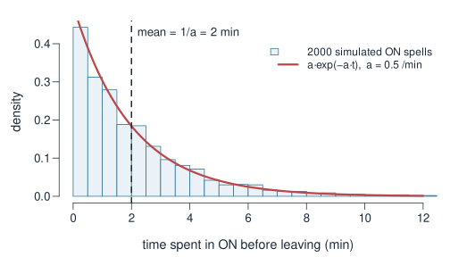
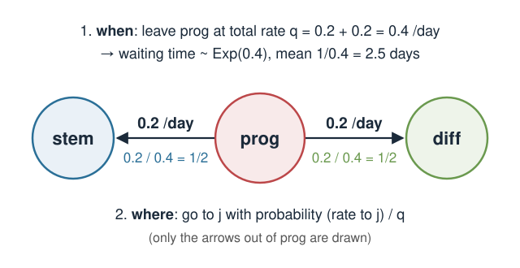
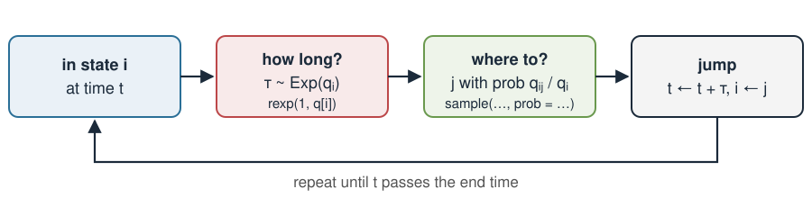
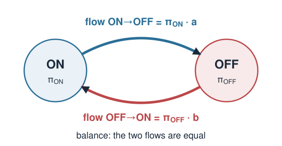
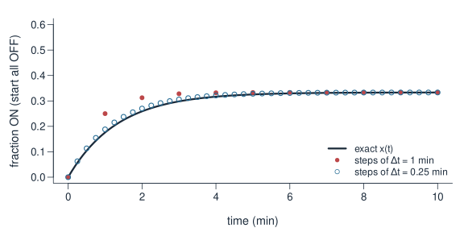
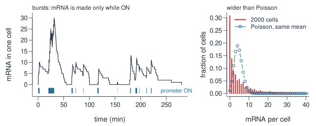

In Markov chains, time moved in steps: \(\mathbf{x}_{t+1} = \mathbf{x}_t P\). Real cells do not wait for a clock tick. A promoter can switch on at 10:03:17, and an ion channel can open after 2.4 ms.
This lecture builds the continuous-time version of the same idea:
Rates instead of per-step probabilities.
The time spent in a state is exponential (from Error models).
The rate matrix\(Q\), whose rows sum to 0.
Simulating a chain: draw a waiting time, then pick a jump.
The stationary distribution from \(\boldsymbol\pi Q = \mathbf{0}\), found by balancing flows.
How \(Q\) links back to the step matrix \(P\).
Biology happens in continuous time
Many biological switches flip at random moments, not on a schedule:
Gene promoter ON/OFF (the telegraph model): a promoter switches between an active and a silent state, and mRNA is made only while it is ON.
Ion channels open and close; the current through a single channel jumps between levels.
Cell states such as stem ↔︎ progenitor → differentiated, observed in time-lapse.
Mutations: a DNA site changes base now and then, over millions of years.
One promoter, simulated over 40 minutes (numbers = how long each period lasted):

From per-step probabilities to rates
A rate is “expected number of events per unit of time”, for example \(0.5\) per minute.
Discrete time (Markov chains)
Continuous time (today)
Time
steps \(t = 0, 1, 2, \dots\)
any time \(t \ge 0\)
Arrow \(i \to j\) carries
probability \(p_{ij}\) per step
rate\(q_{ij}\), e.g. 0.5 /min
Staying put
self-loop \(p_{ii}\)
no self-loop: just “not jumped yet”
Collected in
\(P\), rows sum to 1
\(Q\), rows sum to 0
For a short time \(\Delta t\), a rate turns into a small probability:
\[P(\text{jump } i \to j \text{ within } \Delta t) \;\approx\; q_{ij}\,\Delta t .\]
With \(q_{\text{ON}\to\text{OFF}} = 0.5\) /min: in 6 seconds (\(\Delta t = 0.1\) min) the chance to switch off is about \(0.05\).
How long do you stay? Exponential waiting times
Let \(q_i\) be the total rate of leaving state \(i\) (the sum of the rates on all arrows out of \(i\)). Then the time \(T\) spent in \(i\) before the next jump is exponential (see the exponential distribution in Error models):
\[T \sim \text{Exp}(q_i), \qquad \text{mean time in } i = \frac{1}{q_i}.\]
Promoter: ON is left at \(a = 0.5\) /min, so an ON period lasts on average \(1/0.5 = 2\) minutes.
Short periods are the most common; long ones are rare but do happen.
Memoryless: a promoter that has been ON for 5 minutes is no more likely to switch off in the next second than one that just switched on.
Same maths as gaps between random events, for example \(P(T > 4) = e^{-0.5\cdot 4} \approx 0.135\).

Where to jump next: the jump chain
When a state has several arrows out, two questions are answered separately:
When do you leave? After an \(\text{Exp}(q_i)\) time, where \(q_i = \sum_{j \ne i} q_{ij}\).
Where do you go? To \(j\) with probability \[\frac{q_{ij}}{q_i} = \frac{\text{rate to } j}{\text{total leaving rate}}.\]

The list of states visited, ignoring the times, is an ordinary discrete Markov chain (the jump chain), with no self-loops.
The rate matrix \(Q\)
Collect the rates in a matrix, in the same row = from, column = to convention as \(P\):
Off the diagonal:\(q_{ij}\) = rate from \(i\) to \(j\) (zero if there is no arrow).
On the diagonal:\(q_{ii} = -q_i\), minus the total rate of leaving \(i\).
So every row of \(Q\) sums to 0. For 3 cell states (rates per day):
Mean times: ON \(1/0.5 = 2\) min, OFF \(1/0.25 = 4\) min
With only one arrow out, the jump chain is “always switch”.
How does a population change? Like \(\mathbf{x}_{t+1} - \mathbf{x}_t = \mathbf{x}_t(P - I)\) in discrete time, here change per minute\(= \mathbf{x}(t)\,Q\):
\[\text{change in } x_{\text{ON}} \text{ per minute} = \underbrace{-a\,x_{\text{ON}}}_{\text{leaving ON}} + \underbrace{b\,x_{\text{OFF}}}_{\text{arriving from OFF}}.\]
Simulating a chain: the Gillespie idea
To simulate one cell, alternate how long and where to:

a <-0.5; b <-0.25# rates per minutet <-0; state <-"OFF"; times <-0; states <- statewhile (t <60) { rate <-if (state =="ON") a else b # total leaving rate t <- t +rexp(1, rate) # how long? Exp(rate) state <-if (state =="ON") "OFF"else"ON"# where to? (only one choice here) times <-c(times, t); states <-c(states, state)}
This is the Gillespie algorithm (Gillespie 1977), used for simulating chemical reactions in cells.
Try it: 200 promoters in continuous time
Stationary distribution: balance the flows
The distribution stops changing when the change per unit time is zero:
\[\boldsymbol\pi Q = \mathbf{0}, \qquad \textstyle\sum_k \pi_k = 1 \qquad \text{(compare } \boldsymbol\pi P = \boldsymbol\pi \text{ in discrete time).}\]

For 2 states this is flow in = flow out:
\[\pi_{\text{ON}}\, a = \pi_{\text{OFF}}\, b .\]
Add \(\pi_{\text{ON}} + \pi_{\text{OFF}} = 1\):
\[\boldsymbol\pi = \frac{(b,\ a)}{a+b}.\]
Promoter: \(\boldsymbol\pi = (0.25, 0.5)/0.75 = (1/3,\ 2/3)\). ON one third of the time.
Same answer from the waiting times: mean ON 2 min, mean OFF 4 min, so ON a fraction \(2/(2+4) = 1/3\) of the time.
Relaxation: how fast is equilibrium reached?
For 2 states, the distance to \(\boldsymbol\pi\) shrinks exponentially, with rate \(a + b\):
Promoter: \(a + b = 0.75\) /min, so the gap halves every \(\ln 2 / 0.75 \approx 0.9\) min. Both rates speed this up, even though only their ratio sets \(\boldsymbol\pi\).
Back to discrete time: \(P \approx I + Q\,\Delta t\)
Look at the chain only every \(\Delta t\) minutes. For small \(\Delta t\), using \(q_{ij}\Delta t\) for the chance of a jump:
Rows of \(P\) sum to 1, because rows of \(Q\) sum to 0.
Same \(\boldsymbol\pi\): \(\boldsymbol\pi P = \boldsymbol\pi + \Delta t\,\boldsymbol\pi Q = \boldsymbol\pi\).
Small \(\Delta t\) follows the exact curve; large \(\Delta t\) does not.
Aside: the exact step matrix is \(P(t) = e^{Qt}\), the “matrix exponential” (expm package). Not needed here.

Where this shows up: transcriptional bursting
Add mRNA to the telegraph model: while ON, mRNA is made at rate \(s\); each mRNA is degraded at rate \(g\). It is still a continuous-time Markov chain, now with many states (promoter, number of mRNA), simulated with Gillespie.

Short, rare ON periods give bursts. Across 2000 simulated cells: mean \(4.5\) mRNA, variance \(39\), and \(31\%\) zeros where a Poisson with that mean would give \(1\%\). These are the overdispersed counts of Error models; with bursty promoters, counts are close to negative binomial.
Where this shows up: DNA substitution models
At one DNA site, bases change by mutation over long times: a 4-state chain on \(\{\mathtt{A},\mathtt{C},\mathtt{G},\mathtt{T}\}\).
The simplest model, Jukes–Cantor: every change happens at the same rate \(\alpha\).
With \(3\alpha = 1\), time is measured in expected substitutions per site, and the chance that a site still shows its original base after time \(t\) is \(\tfrac14 + \tfrac34 e^{-4t/3}\).
So two sequences can never differ at more than about \(3/4\) of their sites: changes on top of changes are hidden. Distances between species are corrected for this.
Richer models give transitions and transversions different rates, or unequal base frequencies. Phylogenetics software fits such \(Q\) matrices.
Assumptions, and when they break
Assumption
What it means
When it breaks
Memoryless
waiting times are exponential; time already spent does not matter
a cell-cycle phase has a minimum length; a promoter has a refractory period after switching off
Constant rates
\(q_{ij}\) do not change over time
circadian rhythms, a drug added at a fixed time, cells that age
Few, well-defined states
the state says everything about the future
a “state” hides sub-states (chromatin, signalling)
Independent walkers
cells do not influence each other
quorum sensing, competition for resources
A common fix for non-exponential times: split one visible state into several hidden stages in a row. The total time then has a peak instead of a maximum at zero, while the chain stays Markov on the larger state space.